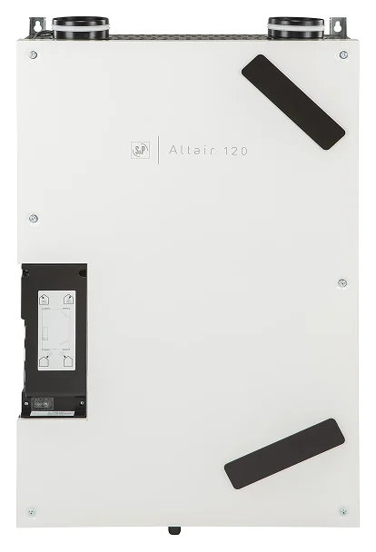
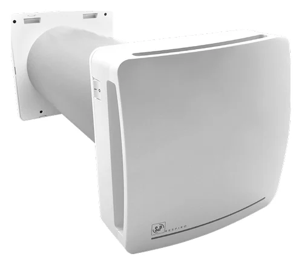

Isı Geri Kazanım Cihazları
Konut Tip Isı Geri Kazanım Cihazları ALTAIR
Duvar veya asma tavan montajına göre seçilebilen, kompakt konut tipi ısı geri kazanım cihazı.

Isı Geri Kazanım Cihazları
Tek bir odanın taze hava ihtiyacı için seramik eşanjörlü, merkezi olmayan havalandırma ünitesi.
Ölçü, kapasite ve donanım seçeneklerini projenize göre birlikte netleştirelim.
DOĞRU ÜRÜNÜ BİRLİKTE SEÇELİM
Ürün kodunu, ihtiyacınızı veya uygulama alanınızı paylaşın.